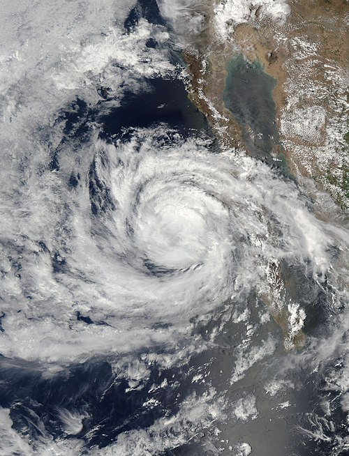

<!DOCTYPE html>
<html lang="en">
<head>
    <meta charset="UTF-8">
    <meta name="viewport" content="width=device-width, initial-scale=1.0">
    <title>EmiliaPath</title>
        <link rel="stylesheet" href="https://unpkg.com/leaflet@1.9.4/dist/leaflet.css"
        integrity="sha256-p4NxAoJBhIIN+hmNHrzRCf9tD/miZyoHS5obTRR9BMY="
        crossorigin=""/>
        <script src="https://unpkg.com/leaflet@1.9.4/dist/leaflet.js"
        integrity="sha256-20nQCchB9co0qIjJZRGuk2/Z9VM+kNiyxNV1lvTlZBo="
        crossorigin=""></script>
        <script src="./Hurricane.js"></script>
</head>
<body>
    <div id="mapid"></div>
    <style>
        #mapid{ width: 900px; height: 500px; }
    </style>
    
    
    <script>
    var map = L.map('mapid', {crs: L.CRS.EPSG3857}).setView([18, -120], 5);

    var USGS_USImageryTopo = L.tileLayer('https://basemap.nationalmap.gov/arcgis/rest/services/USGSImageryTopo/MapServer/tile/{z}/{y}/{x}', {
    	maxZoom: 20,
	    attribution: 'Tiles courtesy of the <a href="https://usgs.gov/">U.S. Geological Survey</a>'
        }).addTo(map);

    var Icon = L.icon({
        iconUrl: './HurricaneIcon.png',   
        iconSize: [40,40],
        popupAnchor: [0,0]
        });

    var customPopup = "Tropical Storm Emilia<br/> <p>"

    L.geoJSON(Hurricane, {
        pointToLayer: function (feature, latlng) {
        return L.marker(latlng, {icon: Icon});}}) // c
        .bindPopup(customPopup)
        .addTo(map); 

    </script>
</body>
</html>
